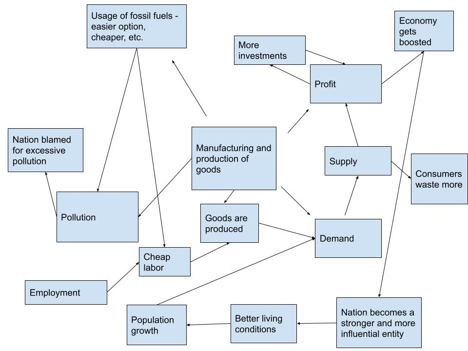
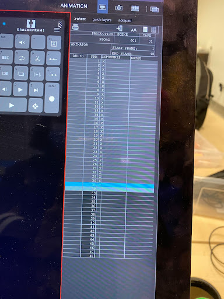
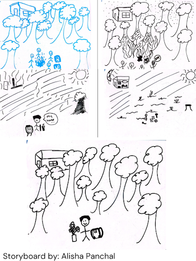
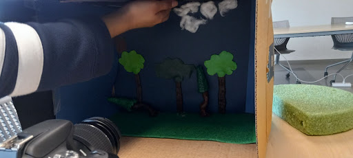
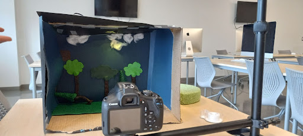
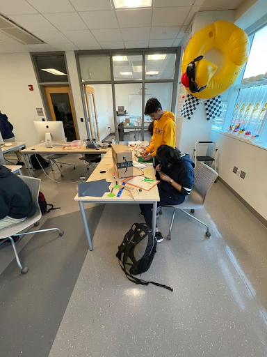

From California to Australia, forest fires are becoming tragically common, displacing many locals and destroying the environment. However, in other parts of the world, these issues seem like nothing to worry about, and especially in the context of climate change, this attitude can be dangerous.
In this short Stop Motion animation, a story about a regular camper turns real. From a normal campfire, this fire burns to reach the high levels of the forest.
This project's inception began in the late December of 2022. In our Orange 5B group, members consisted of Alisha, Sadrah, and myself. Brainstorming modern ideas pertaining to social and environmental issues, we settled on climate change. For some time, we were moving in different directions. I decided to focus on the unfortunate yet necessary environmental sector, particularly affecting developing countries. A cause and effect model can be seen here:
All of us had different ideas, but finally we selected Alisha's idea, and after much discussion, decided to commit to a Stop Motion Animation. Initially, we thought of making a Zoetrope model, but we decided against it. Alisha's causal effect analysis can be seen here:
With this idea, we decided to address climate change, specifically tackling the concept of forest fires. We wanted to show how small sparks can create a huge flame, and how that small concept about humans can literally apply to climate change.
As we finalilzed initial ideas, we worked to create our storyboard. My storyboard was not used, but there was a debate about whether to use Sadrah's storyboard or Alisha's. In the end, Alisha's was selected and we got to constructing our set.
The story starts with a group of campers coming into view, a forest with a house in the distance. The group settles down in an open patch, builds a campfire, and goes to sleep, with the campfire still lit.
The story escalates overnight as the fire spreads because of high winds, catching on the campers' supplies and on the trees in the forest, also engulfing and burning down the house in the background.
The story ends when the protagonist, a hiker, comes into view, a black landscape with fumes rising into the sky, and is devastated to see his house burned to the ground, but starts to plant trees to restore the forest and rebuild his house.
The main protagonist for this story was a random hiker whose goal was to save his home from a fire. On the other hand, the main antagonist was the camper who just wanted to warm up on a cold night, camping and resting near the protagonist's home.
Overall, I mostly worked on creating the set, and analyzing elements to use for the DragonFrame animation. In our set, making a 3D set was necessary, so I worked on getting the background wallpaper, flooring, and other elements ready. These included logs and fire for our campfire, the barks for trees for trees in the background (2 of these trees were 3D, the other two were flat and were placed on the wallpaper). Disregarding the wallpaper and flooring, these elements were made from clay. I made two floors, one with a charred feature, made from black paper and some brown specks to represent a charred and burnt ground from the aftermath of a forest fire. The second one was the one used most often, as it was similar to grass in texture. It was used in the scenes prior to the forest fire, and was adjusted for lighting purposes. In addition, I helped to make the clouds in the background for the night sky, tearing through cotton balls and gluing these chunks to the wallpaper. In essence, I helped to create the set. However, one downside to this was that making the set, the characters, and the mechanical designs for the lighting, a lot of time was used. Thus, we did not finish in time, as it is still work in progress. Alisha also worked on the set, specifically making the trees and managing everything and the technology aspects, while Sadrah mostly worked on lighting and clay characters.
For the technology and code segment, I helped to adjust the camera in terms of zoom, fine focus, and exposure for different scenes. I helped to take the photos for the first few scenes, and I also worked on getting the software ready to use on the iMacs that we used, downloading to my Google Drive and loading it back up to the desktop whenever we needed it. In terms of lighting, I did not use the programmable LED circuit board much, and in the end it was not quite utilizable for our setting. We ended up using an LED video light, for which we could adjust the hues for the colors, and the brightness depending on the scene. For those aspects, Alisha and Sadrah mostly worked on the lighting, using code to make the lighting adjustable on the strobe light. Ultimately though, we used the LED video light.
This project was quite enjoyable to work with. We created a story, a set, characters, and used technology to convert it into a multimedia project. This website itself is the ultimate product of our hard work. Thank you for going through our content, and keep scrolling for some behind the scenes photos!
    